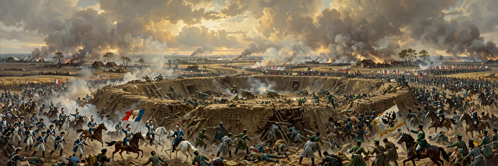

The Battle of Borodino (Russian: Бородинское сражение) took place on 7 September 1812 (26 August Old Style) near the village of Borodino, west of Moscow, during Napoleon's invasion of Russia. The largest and bloodiest single-day battle of the Napoleonic Wars — involving some 250,000 men — pitted the Grande Armée against the Imperial Russian Army under General Mikhail Kutuzov. The French forced the Russians from their positions but failed to destroy their army; both sides suffered staggering losses, commonly estimated at 70,000–80,000 combined.
| Battle of Borodino | |
|---|---|
| Date | 7 September 1812 |
| Location | Borodino, west of Moscow, Russian Empire |
| Result | French tactical victory; Russian army withdraws in good order |
| Belligerents | French Empire and allies v. Russian Empire |
| Commanders | Napoleon v. Mikhail Kutuzov; Pyotr Bagration † |
| Strength | ~130,000 French and allies v. ~120,000–155,000 Russians (estimates vary) |
| Casualties | French ~30,000–35,000; Russian ~40,000–45,000 (commonly cited ranges) |
After months of retreat, Kutuzov chose a position astride the Smolensk–Moscow road anchored by the Great Redoubt in the centre and the Bagration flèches to the south. Napoleon, ill and uncharacteristically cautious, rejected a wide flanking manoeuvre and attacked frontally. The redoubt changed hands in ferocious fighting; the flèches were stormed repeatedly — Prince Bagration, Russia's most beloved general, was mortally wounded. French cavalry and infantry finally carried both positions by evening, but the Russian army, though mauled, withdrew intact. Napoleon declined to commit his Imperial Guard to finish it.
Kutuzov retreated past Moscow, which the Russians abandoned and then saw burn. Napoleon occupied the empty, burning capital for five weeks, waiting for Alexander I of Russia to negotiate; when he finally retreated in October, winter and hunger destroyed his army. Borodino is commemorated in Tolstoy's War and Peace, in Tchaikovsky's 1812 Overture (written for the Moscow cathedral built to celebrate the deliverance), and by a vast panorama museum on the field.

[ IMAGE: Detail of the Borodino panorama painting (Roubaud, 1912) — the struggle for the Great Redoubt, smoke rolling over packed infantry and cavalry. ]The fighting for the Great RedoubtMikhail Kutuzov · Napoleonic Wars · Alexander I of Russia · Moscow
Categories: Battles of the Napoleonic Wars · 1812 in the Russian Empire · French invasion of Russia